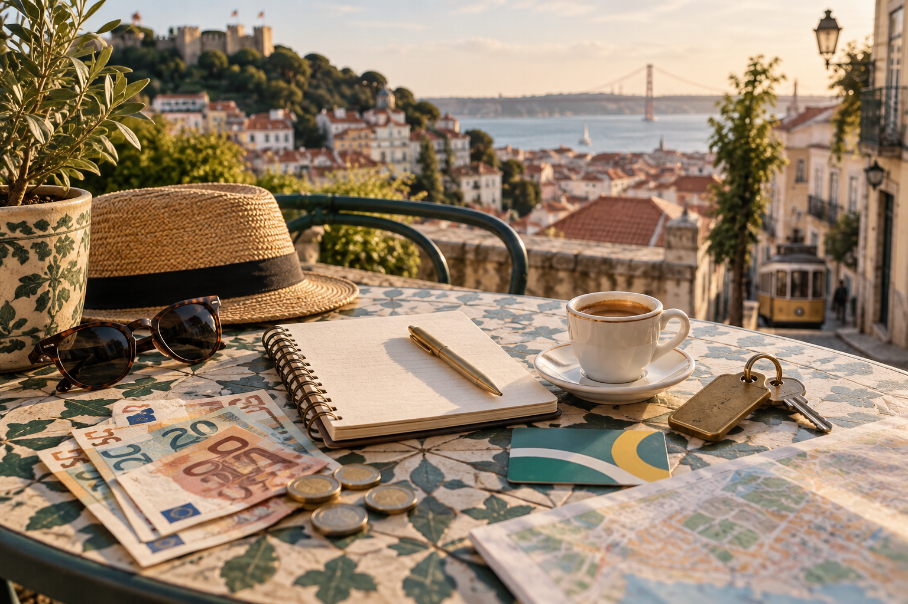
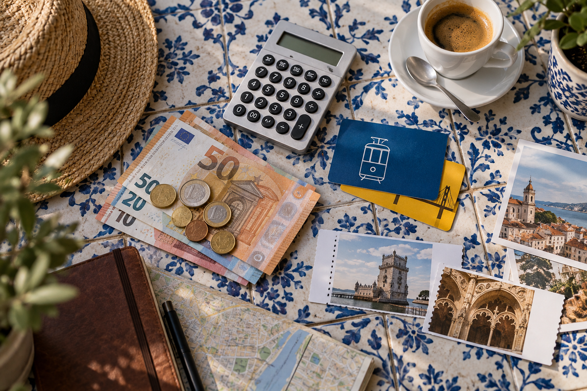
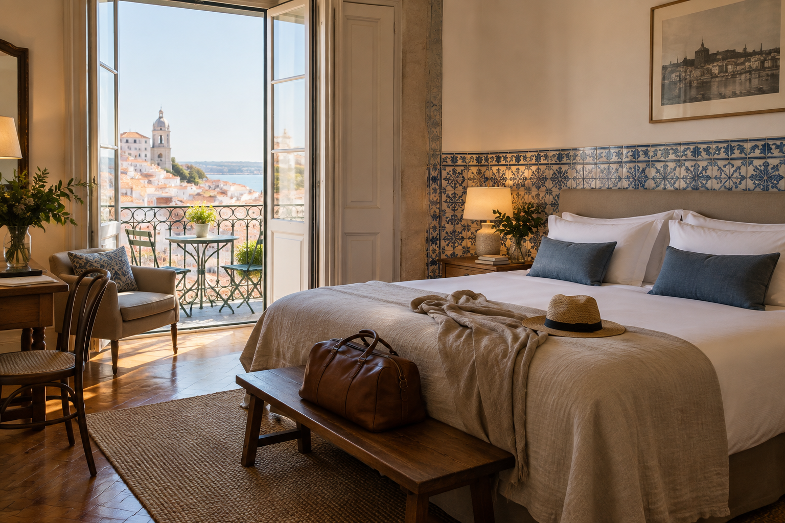

Portugal Trip Cost: Budget for 5, 7, 10 and 14 Days
Portugal is often described as an affordable European destination, but that description can create the wrong expectation. A Portugal trip can still cost a lot if you visit during a busy period, book central hotels late, take several paid tours, or move between too many places. Accommodation usually changes the budget far more than coffee, metro tickets, or a pastel de nata.
When I build a Portugal budget for RoamPlans, I do not start with one average daily cost. I first look at trip length, travel style, season, destinations, and accommodation setup. A seven-day Lisbon and Porto trip can cost less than five nights at a high-demand Algarve resort. This guide uses realistic planning ranges so you can estimate a 5, 7, 10, or 14-day Portugal trip without pretending every traveler spends the same amount.
How Much Does a Portugal Trip Cost?

For early planning, a useful 2026 range is:
| Travel Style | Estimated Cost Per Person, Per Day |
|---|---|
| Budget | €65–€90 |
| Mid-range | €120–€190 |
| Comfortable | €250–€400+ |
These estimates exclude international flights.
For the mid-range and comfortable budgets, they work best as planning estimates for two people sharing a room. Solo travelers using private hotel rooms may spend more per person because they cannot split the room cost.
The ranges include normal spending on:
- ✓Accommodation
- ✓Food
- ✓Local transport
- ✓Intercity transport allowance
- ✓Paid attractions
- ✓Small daily expenses
They do not assume heavy shopping, luxury hotels, private drivers, or several premium tours.
Portugal Trip Cost by Number of Days
Using those daily ranges, your starting budget looks like this:
| Trip Length | Budget | Mid-range | Comfortable |
|---|---|---|---|
| 5 days | €325–€450 | €600–€950 | €1,250–€2,000+ |
| 7 days | €455–€630 | €840–€1,330 | €1,750–€2,800+ |
| 10 days | €650–€900 | €1,200–€1,900 | €2,500–€4,000+ |
| 14 days | €910–€1,260 | €1,680–€2,660 | €3,500–€5,600+ |
These numbers are not package prices.
They are a starting point for building your own budget.
Your real total can move outside these ranges depending on where and when you travel.
What Is Included in These Portugal Budget Estimates?
To make the numbers useful, you need to know what each travel style means.
Budget Traveler
A budget trip may include:
- ✓Hostel dorm or simple guesthouse
- ✓Bakery or café breakfast
- ✓Casual local meals
- ✓Public transport
- ✓Trains or buses between major cities
- ✓Mostly free sightseeing
- ✓A few paid attractions
- ✓Limited taxi use
This style works best for travelers who are comfortable giving up some privacy or hotel location to save money.
Mid-Range Traveler
A mid-range trip may include:
- ✓Private hotel room
- ✓Central or reasonably located accommodation
- ✓Café breakfast
- ✓Restaurant lunch and dinner
- ✓Public transport
- ✓Occasional taxi or ride service
- ✓Intercity trains
- ✓Several paid attractions
- ✓One or two selected experiences
This is the range I would use first for many independent U.S. travelers who want comfort without planning a luxury trip.
Comfortable Traveler
A higher-comfort budget may include:
- ✓Better-located hotel or boutique property
- ✓More restaurant meals
- ✓Frequent taxis
- ✓Flexible train fares
- ✓Wine experiences
- ✓Guided tours
- ✓Higher-priced attractions
- ✓More expensive Algarve or Douro stays
This level can increase quickly if premium accommodation is part of the trip.
International Flights Are a Separate Cost
Do not mix your international airfare into the daily Portugal budget.
Flights from the United States vary too much by:
- ✓Departure city
- ✓Travel month
- ✓Airline
- ✓Number of stops
- ✓Baggage
- ✓Booking date
- ✓Arrival airport
- ✓Departure airport
A traveler leaving from New York may see a very different fare from someone leaving from Dallas, Los Angeles, or a smaller U.S. airport.
Instead, build your budget in two parts:
Portugal ground cost
plus:
International airfare
This makes it much easier to compare trip lengths.
The Five Costs That Control Your Portugal Budget

Most travelers spend money in five main areas:
- ✓Accommodation
- ✓Food
- ✓Transportation
- ✓Attractions and activities
- ✓Small daily expenses
International flights sit outside these five categories.
The size of each category depends on your trip style.
1. Accommodation: Usually the Biggest Cost

For many travelers, hotels are the largest part of the Portugal budget.
Accommodation prices can change because of:
- ✓City
- ✓Neighborhood
- ✓Season
- ✓Weekday vs weekend
- ✓Major events
- ✓Hotel quality
- ✓How early you book
- ✓Cancellation terms
This is why saying Portugal costs one fixed amount per day is misleading.
Budget Accommodation
Budget travelers may use:
- ✓Hostel dorms
- ✓Simple guesthouses
- ✓Basic rooms
- ✓Accommodation outside the busiest central areas
A rough planning range can start around:
€20–€50 per person per night
The lower end often means hostel-style accommodation.
Private rooms can cost more.
Mid-Range Accommodation
For a private room in a well-reviewed hotel or guesthouse, a useful planning range is roughly:
€80–€160 per room per night
Lisbon and popular Algarve areas can move above this range during busy periods.
Porto may sometimes offer better value than central Lisbon, but exact dates matter more than general city averages.
Higher-Comfort Accommodation
Better hotels, boutique properties, resorts, or highly central rooms may start around:
€180–€300+ per room per night
There is no meaningful upper limit once luxury hotels enter the plan.
Hotel Cost Per Person vs Per Room
This is where travel budgets often become confusing.
Hotel prices are normally listed per room, while food and transport costs are normally calculated per person.
Suppose a hotel costs:
€140 per night
For a couple sharing the room:
€70 per person
For a solo traveler:
€140 per person
That difference can change the daily budget more than almost any other expense.
Solo Travelers Should Budget Differently
Portugal can still work well for solo travel, but private accommodation creates a higher per-person cost.
If you want a private hotel room, do not copy a couple's per-person budget.
You are paying the full room price yourself.
Solo travelers can reduce this gap by using:
- ✓Hostels
- ✓Guesthouses
- ✓Smaller rooms
- ✓Less central properties
The right choice depends on how much privacy and location matter to you.
Couples Can Split the Biggest Expense
Couples often get better value per person because accommodation can be shared.
For example:
Hotel: €140Two travelers: €70 each
The same is sometimes true for:
- ✓Taxi rides
- ✓Rental cars
- ✓Some transfers
Food and attraction tickets usually remain individual costs.
Lisbon Accommodation Costs
Lisbon can take a large share of the budget, especially if you want to stay in a central neighborhood.
Prices are often higher around convenient tourist areas.
Paying more for location can still make sense if it reduces:
- ✓Taxi use
- ✓Long commutes
- ✓Time lost traveling
- ✓Difficult hotel transfers
Do not judge a Lisbon hotel only by nightly price.
Look at the full value of the location.
Porto Accommodation Costs
Porto can sometimes cost less than Lisbon, but popular central areas can still become expensive.
Accommodation near major sights and the river may carry a higher price.
Again, check the full route.
A cheaper hotel far from the places you want to visit can create extra transport costs.
Algarve Accommodation Can Change the Whole Budget
The Algarve has one of the largest seasonal price differences in a typical Portugal itinerary.
A coastal stay during high-demand summer dates can cost much more than the same type of room outside that period.
This means a traveler adding three Algarve nights can change the total cost more than expected.
If your dates are flexible, accommodation prices are one reason to compare your trip against Best Time to Visit Portugal: Weather, Crowds and Costs before booking.
2. How Much Does Food Cost in Portugal?
Food is one area where travelers have a lot of control.
You can keep costs low with:
- ✓Bakeries
- ✓Cafés
- ✓Local lunch specials
- ✓Supermarkets
- ✓Casual restaurants
Or you can spend much more on:
- ✓Seafood restaurants
- ✓Wine
- ✓Fine dining
- ✓Tourist-center restaurants
- ✓Multi-course meals
Budget Food Spending
A budget traveler might plan around:
€20–€35 per person per day
This works better if you mix simple meals with local cafés and bakeries.
Mid-Range Food Spending
For regular restaurant meals, a useful range is:
€35–€60 per person per day
This allows more flexibility for:
- ✓Café breakfast
- ✓Restaurant lunch
- ✓Sit-down dinner
- ✓Coffee or snack
Alcohol can raise the total.
Higher Food Budget
Travelers who plan meals as a major part of the trip may spend:
€70–€120+ per person per day
Wine, seafood, tasting menus, and premium restaurants can push the number higher.
Breakfast Does Not Need to Be Expensive
You do not need a full hotel breakfast every day.
A simple café breakfast can keep morning spending low.
A typical traveler may choose:
- ✓Coffee
- ✓Pastry
- ✓Sandwich
- ✓Juice
The bigger food costs usually come later in the day.
Lunch Can Be Better Value Than Dinner
Local lunch specials can offer good value.
If food matters to you but your budget is limited, consider making lunch the larger meal.
Then keep dinner simpler.
This is one of the easiest ways to control daily spending without relying only on supermarket meals.
Tourist Areas Usually Cost More
Restaurant prices can rise near:
- ✓Famous squares
- ✓Major viewpoints
- ✓Busy waterfronts
- ✓Popular attractions
- ✓Resort areas
Walking a few streets away can change your options.
That does not mean every restaurant beside an attraction is poor value.
It means location affects price.
3. How Much Does Local Transportation Cost?
Portugal's major cities can be relatively easy to manage using public transport and walking.
This keeps daily transport spending under control.
For example, Lisbon's 2026 public transport fares remain small compared with accommodation and food costs. A Carris/Metro single ticket is €1.90, while the standard 24-hour Carris/Metro ticket is €7.25.
For most city days, I would plan roughly:
€5–€12 per person per day
for normal public transport use.
Your cost increases if you rely heavily on:
- ✓Taxis
- ✓Ride services
- ✓Airport transfers
Walking Can Save Money, but Do Not Force It
Lisbon and Porto are walkable in many central areas.
They are also hilly.
Saving a few euros is not worth exhausting yourself before lunch.
Budget for occasional transport when it makes the day easier.
Intercity Transportation Needs Its Own Allowance
Moving between destinations costs more than normal city transport.
Your trip may include:
- ✓Lisbon to Porto
- ✓Lisbon to Algarve
- ✓Porto to Douro Valley
- ✓Lisbon to Sintra
- ✓Other regional routes
The total depends on:
- ✓Train type
- ✓How early you book
- ✓Travel time
- ✓Ticket flexibility
- ✓Bus vs train
- ✓Number of transfers
A trip with two bases can therefore cost less than a trip with four bases, even when both last the same number of days.
More Destinations Usually Mean More Transport Spending
This sounds obvious, but it is easy to miss while planning.
Compare:
7 nights: Lisbon + Porto
with:
7 nights: Lisbon + Coimbra + Porto + Algarve
The second route has:
- ✓More intercity tickets
- ✓More station transfers
- ✓More hotel transfers
- ✓Greater chance of taxi use
This is one reason a slower route can save both money and time.
4. Attraction and Activity Costs
Portugal has plenty of free experiences.
You can explore:
- ✓Neighborhoods
- ✓Squares
- ✓Viewpoints
- ✓Markets
- ✓Beaches
- ✓Riverfront areas
- ✓Historic streets
But major attractions and tours add another budget category.
For a normal sightseeing trip, plan roughly:
€10–€30 per person per day
on days when you visit paid attractions.
You will not necessarily spend this every day.
Tours Can Raise the Daily Cost Fast
A day with a guided experience can cost much more than a normal sightseeing day.
Examples include:
- ✓Douro wine tour
- ✓Boat trip
- ✓Food tour
- ✓Private guide
- ✓Algarve coastal excursion
Do not calculate the whole trip using a basic daily budget and then add several premium experiences without adjusting the total.
Decide Which Paid Experiences Matter Most
Instead of booking everything, choose the activities that add something you cannot easily create yourself.
For one traveler, that may be a Douro wine experience.
For another, it may be a boat trip in the Algarve.
For someone else, free city exploration may matter more.
Your budget should reflect your own priorities.
5. Small Daily Costs
Small expenses are easy to ignore during planning.
They can include:
- ✓Coffee
- ✓Water
- ✓Snacks
- ✓Luggage storage
- ✓Public toilets
- ✓Small tips
- ✓Souvenirs
- ✓Pharmacy items
- ✓Extra transport
You do not need to calculate each item separately.
Add a simple daily buffer.
For many travelers:
€10–€20 per person per day
is a useful starting allowance for small unplanned spending.
Do Not Build a Budget With Zero Flexibility
If your budget says you can spend exactly €1,200 and not one euro more, the trip can become stressful.
Prices change.
Plans change.
You may decide to take a taxi after a long day.
You may find a restaurant you want to try.
Keep a buffer outside your planned spending.
A useful approach is to add roughly:
10% to 15%
above your expected ground budget.
You may not spend it.
That is fine.
The purpose is to stop a small change from becoming a financial problem.
What Changes Portugal Trip Cost the Most?
If you want to reduce the total, focus first on the decisions that have the biggest effect.
| Cost Factor | Budget Impact |
|---|---|
| Hotel choice | Very high |
| Travel season | Very high |
| Number of destinations | High |
| Solo vs shared room | High |
| Algarve peak-season stay | High |
| Restaurant style | Medium |
| Rental car | Medium to high |
| Tours | Medium to high |
| Public transport | Low |
| Coffee and small snacks | Low |
This table shows why cutting one coffee per day will not rescue an expensive hotel plan.
Start with the large costs first.
The Better Way to Build Your Portugal Budget
Instead of starting with a fixed daily number, calculate:
Accommodation
plus
Intercity transportation
plus
Food
plus
Activities
plus
Local transport
plus
10–15% buffer
Then add international airfare separately.
This gives you a much more useful Portugal trip estimate than copying one average cost from another traveler.
How Much Does a 5-Day Portugal Trip Cost?
For five days in Portugal, a realistic ground budget per person is roughly:
| Travel Style | 5-Day Budget |
|---|---|
| Budget | €325–€450 |
| Mid-range | €600–€950 |
| Comfortable | €1,250–€2,000+ |
International flights are not included.
A five-day trip usually works best with only one or two main bases. Keeping the route simple also keeps transportation costs under control.
Sample €800 Mid-Range Budget for 5 Days
For one traveler sharing a hotel room with another person:
| Expense | Example Budget |
|---|---|
| Accommodation share | €300 |
| Food | €225 |
| Local + intercity transport | €75 |
| Attractions and activities | €120 |
| Extra spending | €80 |
| Total | €800 |
This example fits a trip such as Lisbon and Porto without premium tours.
Adding an expensive guided experience, high-season hotel, or private transfer can move the total above €950.
How to Keep a 5-Day Trip Affordable
The easiest way is to avoid unnecessary movement.
A route with:
Lisbon + Porto
will usually be easier to budget than:
Lisbon + Porto + Algarve + another overnight stop.
On a short trip, each extra base can add transport and transfer costs without giving you much extra sightseeing time.
How Much Does a 7-Day Portugal Trip Cost?
For one week, plan approximately:
| Travel Style | 7-Day Budget |
|---|---|
| Budget | €455–€630 |
| Mid-range | €840–€1,330 |
| Comfortable | €1,750–€2,800+ |
A seven-day first trip often combines Lisbon, Sintra, and Porto.
This route works well financially because you can stay in two main hotels rather than changing accommodation every night.
Sample €1,100 Mid-Range Budget for 7 Days
| Expense | Example Budget |
|---|---|
| Accommodation share | €420 |
| Food | €315 |
| Transport | €110 |
| Attractions and activities | €165 |
| Extra spending | €90 |
| Total | €1,100 |
This gives you around:
€157 per day
for Portugal ground costs.
That sits close to the spending level reported by many independent travelers in Lisbon and Porto.
Does Adding Sintra Make a 7-Day Trip Much More Expensive?
Usually not compared with adding another overnight destination.
Sintra can be visited from Lisbon without changing hotels.
Your extra costs are mainly:
- ✓Transportation
- ✓Attraction tickets
- ✓Food
- ✓Optional local transport
The cost increases more if you add several paid palaces or use private transportation.
The bigger benefit is that you can add another major destination without paying for another hotel transfer.
Does Adding the Douro Valley Increase the Budget?
Yes, especially if you choose a guided wine experience.
A simple independent visit can stay relatively controlled.
A guided day with:
- ✓Transport
- ✓Wine tastings
- ✓Lunch
- ✓Boat trip
can add a noticeable amount to one day's spending.
If the Douro Valley matters to you, treat it as a planned activity cost rather than trying to hide it inside your normal daily food budget.
How Much Does a 10-Day Portugal Trip Cost?
Ten days gives travelers more route choices, and that also creates a wider cost range.
Plan roughly:
| Travel Style | 10-Day Budget |
|---|---|
| Budget | €650–€900 |
| Mid-range | €1,200–€1,900 |
| Comfortable | €2,500–€4,000+ |
A common 10-day first trip may include:
Lisbon, Porto, and either the Douro Valley or Algarve.
Adding the Algarve often pushes the total higher because you may have another long-distance transfer and three or more nights in a coastal area.
Sample €1,650 Mid-Range Budget for 10 Days
| Expense | Example Budget |
|---|---|
| Accommodation share | €650 |
| Food | €450 |
| Transport | €180 |
| Attractions and activities | €250 |
| Extra spending | €120 |
| Total | €1,650 |
This works out to:
€165 per person per day
before international airfare.
A traveler staying in premium Algarve accommodation can spend much more.
A traveler using simple hotels and fewer paid activities can spend less.
How Much Extra Does the Algarve Add?
There is no fixed amount.
The main variables are:
- ✓Travel month
- ✓Algarve town
- ✓Hotel category
- ✓Number of nights
- ✓Rental car use
- ✓Beach tours
- ✓Boat trips
A three-night Algarve stay in a busy summer period can cost much more than three extra nights in a basic Porto guesthouse.
This is why the destination mix matters as much as the number of days.
Is a Rental Car Worth the Cost on a 10-Day Trip?
Only if it solves a transport problem.
A rental car creates costs such as:
- ✓Daily rental rate
- ✓Insurance
- ✓Fuel
- ✓Tolls
- ✓Parking
If you use it mainly to sit outside a Lisbon or Porto hotel, it adds cost without much value.
If you use it for several Algarve beaches, small towns, or rural areas, the extra cost may be easier to justify.
How Much Does a 14-Day Portugal Trip Cost?
For a two-week trip, plan approximately:
| Travel Style | 14-Day Budget |
|---|---|
| Budget | €910–€1,260 |
| Mid-range | €1,680–€2,660 |
| Comfortable | €3,500–€5,600+ |
A 14-day trip can include more regions while still keeping a sensible pace.
That may mean:
- ✓Lisbon
- ✓Porto
- ✓Douro Valley
- ✓Algarve
- ✓One smaller city or regional stop
More time does not automatically mean a higher daily cost.
Longer stays can sometimes reduce the need for expensive last-minute transport and frequent hotel transfers.
Sample €2,300 Mid-Range Budget for 14 Days
| Expense | Example Budget |
|---|---|
| Accommodation share | €910 |
| Food | €630 |
| Transport | €260 |
| Attractions and activities | €330 |
| Extra spending | €170 |
| Total | €2,300 |
That averages around:
€164 per person per day.
The daily rate is similar to the 10-day example because adding days does not automatically change your travel style.
5 vs 7 vs 10 vs 14 Days: Cost Comparison
Here is the easiest mid-range comparison.
| Trip Length | Example Mid-Range Budget | Average Per Day |
|---|---|---|
| 5 days | €800 | €160 |
| 7 days | €1,100 | €157 |
| 10 days | €1,650 | €165 |
| 14 days | €2,300 | €164 |
The daily figures stay fairly close.
The route causes much of the variation.
A 10-day trip with an Algarve resort and several tours can cost more per day than a 14-day trip using simple hotels and trains.
How Much Does Portugal Cost for a Solo Traveler?
Solo travelers need to think differently about accommodation.
Food, trains, and attraction tickets remain mostly individual expenses.
A hotel room does not.
If a €140 room is shared by two people:
€70 per person
If you travel alone:
€140 per person
That difference adds up fast.
Solo Mid-Range Planning Range
A solo traveler wanting a private room may need roughly:
€150–€230 per day
depending on location and season.
A solo traveler staying in hostels can spend far less.
Sample Solo Trip Costs
| Trip Length | Private-Room Mid-Range Estimate |
|---|---|
| 5 days | €750–€1,150 |
| 7 days | €1,050–€1,610 |
| 10 days | €1,500–€2,300 |
| 14 days | €2,100–€3,220 |
These are broad planning ranges.
A central Lisbon room during high-demand dates can push the total higher.
How Much Does Portugal Cost for a Couple?
Couples can share several major costs.
The largest is usually accommodation.
Some taxis and rental car costs can also be shared.
A mid-range couple might plan roughly:
€220–€340 per day combined
for normal ground costs.
That gives these broad totals:
| Trip Length | Mid-Range Couple Budget |
|---|---|
| 5 days | €1,100–€1,700 |
| 7 days | €1,540–€2,380 |
| 10 days | €2,200–€3,400 |
| 14 days | €3,080–€4,760 |
International flights remain separate.
Can a Couple Travel Portugal for €100 Per Day?
€100 per day for two people is possible only with a very controlled budget.
You would likely need:
- ✓Low-cost accommodation
- ✓Simple meals
- ✓Public transport
- ✓Mostly free sightseeing
- ✓Few paid tours
It becomes much harder in central Lisbon or the Algarve during high-demand periods.
For a comfortable private-room trip, I would budget more.
How Much Does Portugal Cost for a Family of Four?
Family budgeting is different because some costs multiply by four while others do not.
You may pay individually for:
- ✓Flights
- ✓Meals
- ✓Attraction tickets
- ✓Train tickets
But accommodation and rental car costs may be shared.
The largest question is the room setup.
A family may need:
- ✓Family room
- ✓Apartment
- ✓Two hotel rooms
Two hotel rooms can increase the budget sharply.
Family of Four Mid-Range Planning Range
A useful ground-budget starting point is:
€300–€500 per family per day
This gives:
| Trip Length | Family of Four |
|---|---|
| 5 days | €1,500–€2,500 |
| 7 days | €2,100–€3,500 |
| 10 days | €3,000–€5,000 |
| 14 days | €4,200–€7,000 |
International airfare is not included.
Families using apartments and simple meals may spend less.
Families needing two central hotel rooms, private transfers, and several paid activities may spend more.
Children Do Not Always Cost the Same as Adults
Do not simply multiply an adult budget by four.
Children may have:
- ✓Lower attraction prices
- ✓Different transport fares
- ✓Smaller meal costs
But family accommodation can be more expensive than expected.
The correct approach is to price the actual room setup before deciding the daily family budget.
How Much Does a Portugal Honeymoon Cost?
A honeymoon often falls between mid-range and comfortable travel.
Couples may spend more on:
- ✓Boutique hotels
- ✓Better rooms
- ✓Wine experiences
- ✓Special dinners
- ✓Private transfers
- ✓Douro stays
- ✓Coastal hotels
A rough ground-budget range for two people could be:
€300–€600+ per day
A 10-day honeymoon could therefore cost roughly:
€3,000–€6,000+
before flights.
The total depends heavily on accommodation.
Portugal Backpacking Budget
Portugal can still work for backpackers, but Lisbon and peak-season Algarve prices need care.
A backpacker using:
- ✓Hostel dorms
- ✓Public transport
- ✓Supermarkets
- ✓Bakeries
- ✓Simple local meals
- ✓Free attractions
may aim for:
€50–€75 per day
A 10-day trip would then require roughly:
€500–€750
before flights.
That budget becomes harder if you add several paid tours or travel during high-demand periods.
Should You Budget in Euros or U.S. Dollars?
Build the Portugal part of your budget in euros.
That is the currency you will spend.
If you build everything in U.S. dollars, exchange-rate changes can make your estimate less clear.
A better system is:
Portugal costs = euros
International flights = dollars if purchased in the U.S.
Then convert your total near the end of the planning process.
Do Not Use One Exchange Rate for Months
Currency rates move.
If your trip is several months away, avoid building a budget that depends on one exact conversion.
Add a little room for exchange-rate changes.
Your €1,500 trip budget remains €1,500 inside Portugal even if its dollar value changes before departure.
Route Choice Can Change the Cost More Than Trip Length
Compare two 10-day trips.
Trip A
Lisbon + Porto
Longer stays, fewer transfers.
Trip B
Lisbon + Porto + Douro Valley + Algarve + another overnight stop.
Both last 10 days.
Trip B can cost more because it may require:
- ✓More trains
- ✓More hotel changes
- ✓More local transfers
- ✓Rental car
- ✓More paid experiences
This is why the cheapest way to travel Portugal is often not about shortening the trip.
It is about simplifying the route.
A Longer Trip Can Have a Lower Daily Cost
A 14-day traveler who stays longer in each place may have a lower daily average than someone doing a fast five-day trip.
Why?
The longer traveler may have:
- ✓Fewer expensive transfers per day
- ✓More simple local days
- ✓More supermarket or casual meals
- ✓Fewer rushed taxis
- ✓Less need for premium scheduling
Trip length and daily cost do not always rise together.
Which Portugal Trip Length Gives the Best Value?
There is no single winner.
For cost control:
5 days keeps the total low but gives you limited time.
7 days works well for a simple two-base route.
10 days gives more choice but can become expensive if you add the Algarve and tours.
14 days has the highest total cost, but the daily average can remain reasonable if you travel slowly.
Choose the trip length based on available time first.
Then build the budget around that trip rather than cutting useful days simply to reduce the headline total.
How Travel Season Changes the Cost of Portugal
The same Portugal itinerary can cost very different amounts depending on your dates.
The biggest change usually appears in accommodation.
| Travel Period | Typical Cost Pressure |
|---|---|
| Peak summer | Highest |
| Popular spring dates | Moderate to high |
| Early fall | Moderate to high |
| Late fall | Lower |
| Winter outside holidays | Often lower |
| Major festivals or events | Can rise sharply |
This does not mean every July hotel is expensive or every January hotel is cheap.
Your exact city, neighborhood, weekend, and event dates still matter.
Where Seasonal Price Changes Matter Most
Season has a bigger effect in some places than others.
Algarve
The Algarve can show a large gap between busy beach dates and quieter periods.
Accommodation near popular beaches may take a much larger share of your budget in summer.
Lisbon
Lisbon has year-round demand.
Central hotels can stay expensive during popular weekends, events, and busy travel periods even outside summer.
Porto
Porto prices also change with demand, events, weekends, and season.
Douro Valley
Wine hotels and small countryside properties can have limited room supply.
A specific property may become expensive simply because few rooms remain.
The lesson is simple:
Check accommodation before deciding that a certain month is cheap.
Portugal Costs by Destination
Your daily spending can change as you move around the country.
| Destination | Main Budget Pressure |
|---|---|
| Lisbon | Central accommodation |
| Porto | Central accommodation and activities |
| Sintra | Attraction tickets |
| Douro Valley | Tours, wine experiences, transport |
| Algarve | Accommodation, car use, boat trips |
| Smaller towns | Transport can matter more than sightseeing |
This is why one national daily average has limits.
A Lisbon museum day and a guided Douro wine day should not have the same budget.
Lisbon Budget Pressure
In Lisbon, the main cost is often where you sleep.
After accommodation, normal city days can be controlled with:
- ✓Walking
- ✓Public transport
- ✓Casual food
- ✓Selected paid attractions
The city becomes more expensive when your plan includes frequent taxis, premium dining, or several paid activities each day.
Porto Budget Pressure
Porto can work well for different budgets.
The biggest jump often comes when you add wine-related experiences or a Douro Valley day.
A normal Porto sightseeing day may cost much less than a full guided excursion.
Treat those as separate budget days.
Sintra Budget Pressure
Sintra is a good example of how attraction choices affect spending.
Transportation from Lisbon may be manageable, but visiting several paid sites in one day can raise the total.
You do not need to buy a ticket to every major attraction.
Choose the places that matter most to you.
Douro Valley Budget Pressure
The Douro Valley can be one of the more expensive days on a Portugal trip if you book a complete guided experience.
Your cost may include:
- ✓Transportation
- ✓Wine tastings
- ✓Lunch
- ✓Boat trip
- ✓Guide
An independent visit and a premium guided experience are two very different budgets.
Decide which type of day you want before estimating the trip total.
Algarve Budget Pressure
In the Algarve, three decisions matter most:
- ✓Travel dates
- ✓Accommodation
- ✓Whether you rent a car
Activities such as boat trips can add another large expense.
A traveler staying in one town and using simple transport may spend very differently from someone driving between beaches and booking several excursions.
Hidden Portugal Trip Costs to Add to Your Budget
A realistic budget should include expenses that do not always appear in the first hotel or flight search.
These small costs can add up across a longer trip.
Tourist Taxes
Some Portuguese cities charge a municipal tourist tax on overnight stays.
In Lisbon, the current tourist tax is €4 per guest per night, up to seven nights.
In Porto, the current tourist tax is €3 per guest per night, up to seven consecutive nights.
Some travelers may qualify for exemptions.
Other Portuguese municipalities can have their own rules and amounts.
Check the tax for every place where you stay.
Example for a Couple in Lisbon
Two adults staying four nights:
€4 × 2 people × 4 nights = €32
That €32 may not look large beside the hotel bill, but it still belongs in the budget.
Baggage Fees
A flight or low-cost connection may look cheap until you add:
- ✓Checked bag
- ✓Cabin bag
- ✓Seat selection
- ✓Priority boarding
Always compare the final ticket price rather than the first fare shown.
This is especially important if your Portugal trip includes another European flight.
Airport Transportation
Your ground budget should include transport between the airport and accommodation.
The cost depends on whether you use:
- ✓Metro
- ✓Bus
- ✓Train
- ✓Taxi
- ✓Ride service
- ✓Private transfer
Do not assume airport transport is included in normal sightseeing costs.
Luggage Storage
Early arrival or late departure may leave you with several hours between your hotel and flight.
You may need:
- ✓Hotel luggage storage
- ✓Station lockers
- ✓Paid luggage storage
It is usually a small expense, but frequent hotel changes make it more likely.
Rental Car Extras
The advertised car rental price may not be the final amount.
Your real car budget can include:
- ✓Insurance
- ✓Fuel
- ✓Tolls
- ✓Parking
- ✓Additional driver
- ✓Automatic transmission
- ✓One-way drop fee
- ✓Child seat
Price the full rental setup before deciding whether driving saves money.
Parking
Parking can become an unnecessary cost if you keep a rental car during a Lisbon or Porto stay.
Check whether your hotel includes parking.
If it does not, add the expected parking cost before comparing car and train travel.
Bank and ATM Fees
Your bank may charge for:
- ✓Foreign transactions
- ✓International ATM withdrawals
- ✓Currency conversion
These fees are easy to ignore because they may appear after the purchase.
Check your card terms before leaving the United States.
Dynamic Currency Conversion
A card terminal or ATM may offer to charge you in U.S. dollars instead of euros.
That conversion may include a less favorable rate.
Check the amount carefully before accepting the option.
For planning purposes, keep your Portugal budget in euros.
Phone and Mobile Data
Mobile service can create another small trip cost.
Your options may include:
- ✓U.S. international roaming
- ✓eSIM
- ✓Local SIM
Compare your existing phone plan before buying anything extra.
Travel Insurance
Travel insurance is another cost that sits outside normal daily spending.
The price depends on:
- ✓Trip value
- ✓Traveler age
- ✓Coverage
- ✓Medical limits
- ✓Cancellation protection
Do not include insurance inside your normal food or activity allowance.
Keep it as a separate pre-trip expense.
Souvenirs and Shopping
Shopping is personal.
One traveler may spend €20.
Another may spend €500.
Because it varies so much, I do not include major shopping inside the core Portugal budget.
Create a separate shopping allowance if you plan to buy:
- ✓Wine
- ✓Ceramics
- ✓Clothing
- ✓Gifts
- ✓Local products
This keeps the travel budget more accurate.
How to Save Money in Portugal Without Making the Trip Worse
The best savings come from large decisions.
Do not make the trip less enjoyable just to save a few euros on coffee.
1. Compare Dates Before Cutting Trip Days
If your schedule is flexible, compare nearby weeks.
A lower hotel rate across seven nights can save more money than removing one sightseeing day.
2. Use Fewer Hotel Bases
Every extra base can add:
- ✓Intercity fare
- ✓Station transfer
- ✓Luggage storage
- ✓Taxi
- ✓Time
Staying longer in fewer places can reduce both cost and stress.
3. Share Accommodation When Possible
For couples and friends, sharing a room has a major effect on per-person cost.
Accommodation is often too large an expense to ignore.
4. Mix Restaurant Meals With Simple Food
You do not need to choose between restaurants every meal and supermarket food every meal.
A practical mix might be:
Simple breakfast
Casual lunch
Restaurant dinner
On another day, make lunch the main restaurant meal.
This gives you food experiences without paying premium dinner prices three times per day.
5. Use Public Transport Inside Major Cities
Public transport is usually a small part of a Lisbon or Porto budget compared with taxis.
Use taxis when they solve a real problem rather than by default.
6. Do Not Keep a Rental Car When It Adds No Value
A car may be useful for rural areas or parts of the Algarve.
It may be an extra expense while parked in a city.
Rent it only for the days you need it.
7. Choose Paid Attractions Instead of Collecting Them
A long attraction list can quietly become expensive.
Choose the sites that matter most.
Fill the rest of the day with:
- ✓Neighborhoods
- ✓Viewpoints
- ✓Markets
- ✓Riverfront walks
- ✓Beaches
- ✓Historic streets
Free does not mean low value.
8. Limit Premium Tours
One excellent guided experience may be more useful than booking a tour in every destination.
Choose premium activities where the guide, transportation, or access adds real value.
9. Keep a Food and Activity Budget Per Day
You do not need to track every coffee.
Give yourself a flexible daily spending target.
For example:
Food allowance: €50
Activities allowance: €20
If one day costs more, another day can cost less.
10. Protect Your Emergency Buffer
A budget buffer is not extra spending money.
Keep it for:
- ✓Missed transport
- ✓Unexpected taxi
- ✓Medical need
- ✓Last-minute hotel issue
- ✓Other unplanned costs
If you reach the final day without using it, that is a good result.
Where Not to Cut Your Portugal Budget
Saving money has limits.
I would be careful about cutting costs in areas that can create bigger problems later.
Do Not Choose a Bad Hotel Location Only for Price
A very cheap hotel far from everything can create:
- ✓More transport costs
- ✓More travel time
- ✓More difficult late-night returns
Compare total value.
Do Not Skip Needed Insurance Only to Lower the Trip Total
Insurance is a personal choice, but base the decision on risk and coverage rather than trying to make your budget table look cheaper.
Do Not Book Impossible Connections
A cheaper train or flight is not a good deal if the connection time is unrealistic.
Do Not Underbudget Food
Food is a normal daily need.
A budget that assumes you will spend almost nothing on meals for two weeks is unlikely to hold unless you have a clear plan.
Build Your Portugal Budget in Six Steps
Use this simple method.
Step 1: Add International Flights
Keep the amount separate.
Flights: €_____ / $_____
Step 2: Add Accommodation
Use the actual number of nights.
Accommodation: €_____
Step 3: Add Intercity Transport
Include:
- ✓Trains
- ✓Buses
- ✓Rental car
- ✓Fuel
- ✓Tolls
Intercity transport: €_____
Step 4: Add Daily Spending
Multiply your expected daily amount by the number of days.
Include:
- ✓Food
- ✓Local transport
- ✓Normal attractions
Daily spending: €_____
Step 5: Add Special Experiences
List them separately.
Examples:
- ✓Douro tour
- ✓Algarve boat trip
- ✓Food tour
- ✓Private guide
Special activities: €_____
Step 6: Add 10% to 15% Buffer
Now add a safety margin.
Buffer: €_____
Your total is:
Flights + accommodation + transport + daily spending + special experiences + buffer
Portugal Trip Budget Worksheet
Use this before booking:
| Budget Item | Your Estimate |
|---|---|
| International flights | €_____ |
| Accommodation | €_____ |
| Intercity transport | €_____ |
| Local transport | €_____ |
| Food | €_____ |
| Attractions | €_____ |
| Tours | €_____ |
| Rental car | €_____ |
| Tourist taxes | €_____ |
| Phone/data | €_____ |
| Insurance | €_____ |
| Shopping | €_____ |
| 10–15% buffer | €_____ |
| Total | €_____ |
This gives you a much clearer answer than asking only how much Portugal costs per day.
How Much Cash Should You Carry?
You do not need to carry your whole trip budget in cash.
Cards are useful in many places.
A small cash reserve can help with:
- ✓Small shops
- ✓Cafés
- ✓Markets
- ✓Backup payment
Keep access to more than one payment method.
The exact amount of cash is a personal choice.
Should You Exchange Money Before Portugal?
You do not necessarily need to exchange your full budget before departure.
Compare:
- ✓Your bank's exchange rate
- ✓ATM fees
- ✓Foreign transaction fees
Avoid making a large currency decision without checking the cost.
Is Portugal Still a Budget Destination?
Portugal can still offer good value compared with some other popular Western European destinations.
But calling the entire country cheap is too simple.
Lisbon, Porto, and the Algarve now have strong tourism demand.
Your trip can become expensive if you choose:
- ✓Central premium hotels
- ✓Peak dates
- ✓Several tours
- ✓Private transport
- ✓High-end restaurants
Portugal works better as a flexible-budget destination.
You can travel simply or spend heavily.
- ↗
- ↗
- ↗
Frequently Asked Questions About Portugal Trip Costs
How much money do I need for 7 days in Portugal?
A useful ground-budget range is about €455–€630 for a budget traveler, €840–€1,330 for a mid-range traveler, and €1,750–€2,800+ for higher-comfort travel. International flights are separate.
How much money do I need for 10 days in Portugal?
Plan roughly €650–€900 for budget travel, €1,200–€1,900 for mid-range travel, or €2,500–€4,000+ for higher-comfort travel before international airfare.
How much does two weeks in Portugal cost?
A 14-day ground budget may range from roughly €910–€1,260 for budget travel to €1,680–€2,660 for mid-range travel. Comfortable travel can reach €3,500–€5,600+ per person.
Is Portugal cheap for Americans?
Portugal can offer good value, but popular hotels, tours, and coastal stays can still be expensive. Your exchange rate, travel dates, route, and accommodation standard have a bigger effect than the country-wide label of cheap or expensive.
How much should I budget per day in Portugal?
For early planning, around €65–€90 per day can support a budget trip. A mid-range traveler may use roughly €120–€190 per day, while comfortable travel can reach €250–€400 or more.
Is food expensive in Portugal?
Food can fit several budgets. Bakeries, cafés, and casual restaurants help keep costs lower, while seafood restaurants, wine, and fine dining can raise daily spending quickly.
Is Lisbon or Porto more expensive?
The exact answer depends on your dates and accommodation. Central Lisbon often puts strong pressure on hotel costs, while Porto can also become expensive during busy dates and major events.
Is the Algarve expensive?
The Algarve can be expensive during high-demand beach periods, especially for well-located accommodation. Outside those dates, costs can change significantly.
Do hotels in Portugal charge tourist tax?
Some municipalities do. Lisbon currently charges €4 per guest per night for up to seven nights, while Porto charges €3 per guest per night for up to seven consecutive nights. Other destinations can have different rules.
Should I bring cash or use cards in Portugal?
Use both. Cards are practical for many purchases, while a small amount of cash gives you a backup for smaller payments.
Conclusion
When I build a Portugal budget, I focus first on the expenses that can change the total most: accommodation, dates, route, and major activities. Saving €3 on lunch matters far less than choosing a hotel that costs €80 more every night or adding a rental car you do not need.
Use the 5-, 7-, 10-, and 14-day ranges in this guide as planning limits rather than promises. Price your real hotels and transport, add the experiences you care about, then keep a 10% to 15% buffer. That gives you a budget based on your actual Portugal trip instead of somebody else's spending.